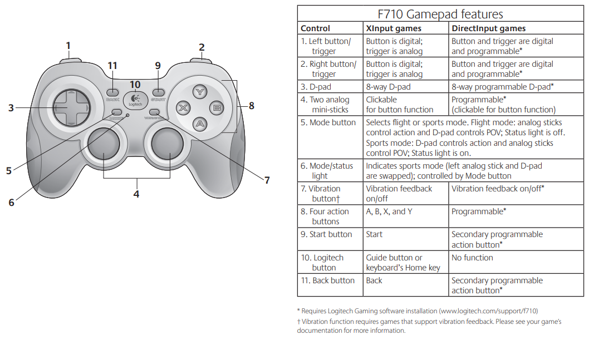
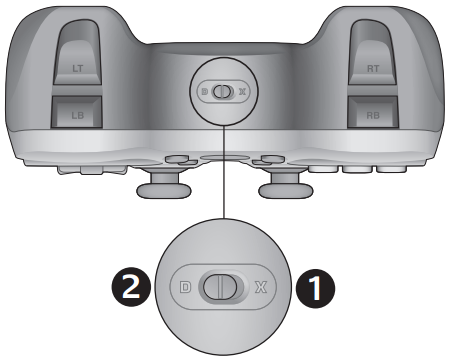

ROS 1 Interface
Supported ROS 1 Distribution
The AIRBOT Play robotic arm are compatible with the following ROS 1 distributions and platforms:
- ROS 1 Noetic on Ubuntu Linux 20.04
1. Environment Setup
1.1 Install latest airbot_play package
airbot_play
The airbot_play package is the core package of AIRBOT Play robotic arm. It provides the basic control library for the robotic arm.
Download the deb package from releases of arm-control. The package file name should be in the format of airbot_play_<version>_<arch>.deb.
Then install the package with the following command:
1.2 Install ros_interface package
ros_interface
The ros_interface package is the ROS 1 interface for AIRBOT Play robotic arm.
Download the deb package ros_interface from releases of sdk. The package file name should be in the format of ros-noetic-ros-interface_<version>-0focal_amd64.deb
Then install the package with the following command:
1.3 (Optional) Install JoyStick Support
JoyStick Support
The JoyStick support is optional. It provides the ability to control the robotic arm with a JoyStick.
Run the following command to install ros packages for JoyStick support:
Now you can control AIRBOT Play via ROS 1 and JoyStick.
2. Usage
2.1 Launch ROS Interface
ROS 1 Environment
Before launching the ROS interface, make sure you have set up the ROS 1 environment correctly. This is typically done by sourcing the setup.bash file:
Launch the ROS interface with the following command:
Launch Parameters
end_mode: The end mode of the robotic arm. The available options aregripper,newtracher, andyinshi. The URDF model of the robotic arm will be loaded according to the selected end mode.urdf: If you wish to perform precise end control, a custom urdf file withlink6as the target end can be specified with this parameter.
2.2 ROS Topic Reference
2.2.1 Subscriber
-
/airbot_play/set_target_poseTopic type:
geometry_msgs::Pose.Set the target gripping pose of the end effector (if end effector exists) or the center of the 6-th motor (if no end effector exists).
The origin of the reference frame is the base of the robotic arm. X points to the front, Y points to the left, and Z points upwards. The orientation is represented by a quaternion representing the rotation from
(1, 0, 0)to the target direction.If an invalid target pose is received by the robotic arm, the robotic arm will not move.
A valid target pose published by
rostopic: -
/airbot_play/set_target_joint_qTopic type:
sensor_msgs::JointState.Set the target joint angles of the robotic arm. The order of the joint angles should be consistent with the order of the joints in the URDF model (from the base to the end).
Infomation other than the target joint angles will be ignored.
If an invalid target joint angle is received by the robotic arm, the robotic arm will not move.
An example of a valid target joint angle published by
rostopic: -
/airbot_play/set_target_joint_vTopic type:
sensor_msgs::JointState.Set the target joint velocities of the robotic arm. The order of the joint velocities should be consistent with the order of the joints in the URDF model (from the base to the end).
Infomation other than the target joint velocities will be ignored.
If an invalid target joint velocity is received by the robotic arm, the robotic arm will not move.
An example of a valid target joint velocity published by
rostopic: -
/airbot_play/gripper/set_positionTopic type:
std_msgs::Float64.Set the target status of the gripper. The target status is a normalized value between
0and1where0means close,1means open.If an invalid target status is received by the robotic arm, the gripper will not move.
An example of a valid target status published by
rostopic:
2.2.2 Publisher
-
/airbot_play/end_poseTopic type:
geometry_msgs::Pose.Publish the current pose of the end effector relative to the base of the robotic arm.
The origin of the reference frame is the base of the robotic arm. X points to the front, Y points to the left, and Z points upwards. The orientation is represented by a quaternion representing the rotation from
(1, 0, 0)to the target direction.An example of the published end pose:
-
/airbot_play/joint_statesTopic type:
sensor_msgs::JointState.Publish the current joint angles of the robotic arm. The order of the joint angles is consistent with the order of the joints in the URDF model (from the base to the end).
An example of the published joint angles:
3.# rostopic echo -n 1 /airbot_play/joint_states header: seq: 13838 stamp: secs: 1713452918 nsecs: 548530541 frame_id: "airbot_arm" name: - joint1 - joint2 - joint3 - joint4 - joint5 - joint6 position: [-0.273708701133728, 0.15468832850456238, -0.02841992862522602, -0.47474631667137146, 0.308041512966156, 0.49420157074928284] velocity: [-0.004395604599267244, -0.004395604599267244, -0.004395604599267244, -0.007326007355004549, -0.007326007355004549, 0.007326007355004549] effort: [-0.03663003817200661, 18.732601165771484, 3.0549449920654297, 0.08547008782625198, -0.07570207864046097, 0.05616605654358864] ---/airbot_play/gripper/positionTopic type:
std_msgs::Float64.Publish the current status of the gripper. The status is a normalized value between
0and1where0means close,1means open.An example of the published gripper status:
2.3 Joystick Control
2.3.1 Overview
AIRBOT Play robotic arm can be controlled by a LogiTech F710 controller through 2.4G adapter.
2.3.2 Structure
The joy support builds on top of the ros-interface package. The nodes responsible for controlling via joystick are:
-
joy- a ROS driver provided by ros packageros-noetic-joyfor a generic Linux joystick. The node reads data from a joystick and publishessensor_msgs/Joymessages to the/joytopic. -
joy_proxy- responsible for reading in rawsensor_msgs/Joymessages from the/joytopic and converting them into/joy_latchedand/joy_triggertopics (Topic type: sensor_msgs/Joy messages). The two topics are used to latch the joystick buttons edges. -
airbot_arm_ros- responsible for reading in/joy_latchedand/joy_triggertopics and sending joint and gripper commands to the robto through arm-control package.
2.3.3 Usage
Launch the control node after connecting the 2.4G receiver of the joystick:
Tip
A red error message might appear in the screen saying
This is normal and will not affect the joystick operation.To understand how the joystick buttons map to controlling the robot, look at the diagram and bullet points below.

-
Left stick horizontal:move forward / backward in the base frame -
Left stick vertical: move left / right in the base frame -
Right stick vertical: move upward / downward in the base frame -
LT+Left stick horizontal: move forward / backward in the end frame -
LT+Left stick vertical: move left / right in the end frame -
LT+Right stick vertical: move upward / downward in the end frame -
Y: Start gravity compensation. Use any position control commands to exit this mode -
A: Start recording. Press again to stop recording -
B: Start replaying recorded trajectory -
RT+Right stick vertical: rotate pitch relative to end frame -
RT+Right stick horizontal: rotate yaw relative to end frame -
RT+D-Pad left / right: rotate roll relative to end frame
The Logitech gamepad (joystick) supports both XInput and DirectInput interface modes. You can switch between these two modes by sliding a switch on the side of the gamepad. It’s recommended that you leave the gamepad in XInput mode, which is marked “X” (1) on the gamepad side. In XInput mode, the gamepad uses standard Windows XInput gamepad drivers. It is not necessary to install Logitech Gaming software unless you are using the gamepad in DirectInput mode.
